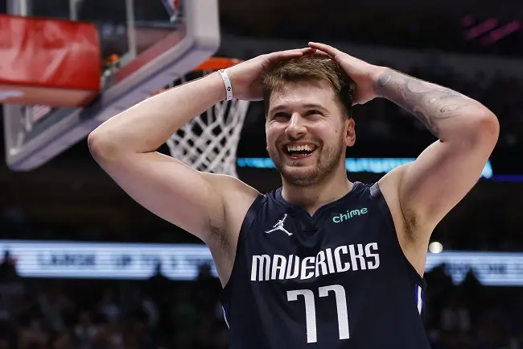

Armador fica atrás apenas de LeBron James como jogador sub-23 com mais partidas de playoffs anotando mais de 30 pontos e tem maior média de pontos da Liga em jogos de eliminação
Em casa, o Dallas Mavericks venceu o Golden State Warrios por 119 a 109, e levou a final da Conferência para o jogo 5. E Luka Doncic, mais uma vez, teve uma atuação espetacular, anotando 30 pontos, pegando 14 rebotes e dando 9 assistências. Com isso, o ala-armador alcançou o 17° jogo de playoffs com 30 ou mais pontos na carreira. O eslovendo assim fica empatado com Kevin Durant e Kobe Bryant e atrás apenas de LeBron James (21 partidas) como jogador com 23 anos ou menos com mais partidas alcançando essa pontuação.
Além do desempenho excepcional em jogos de pós temporada, Luka Doncic aparece também em jogos onde seu time corre risco de eliminação, como foi o jogo 4 da final contra os Warriors. Neste tipo de partida, o esloveno tem uma média de 36,6 pontos por jogo, sendo a mais alta da história da NBA.
Ultimas Noticias